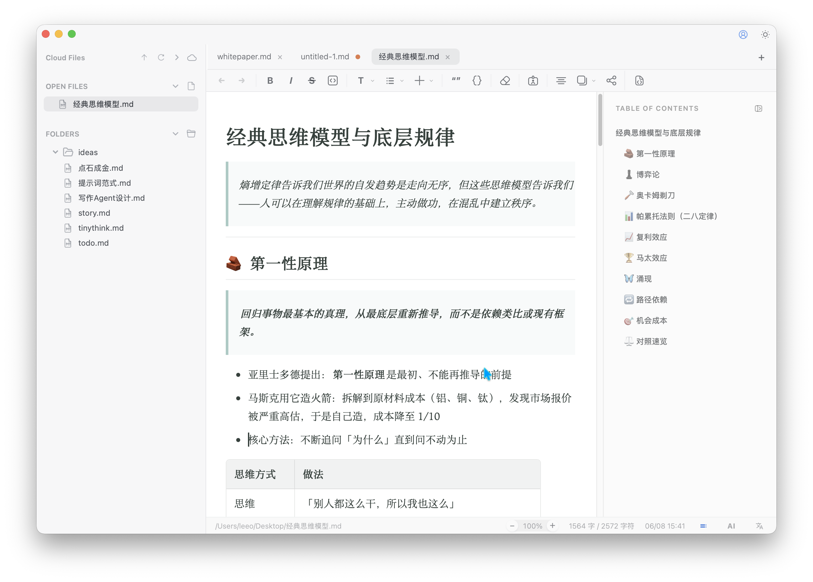
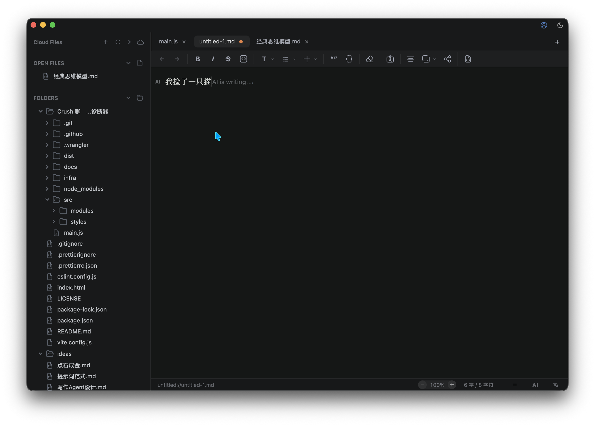
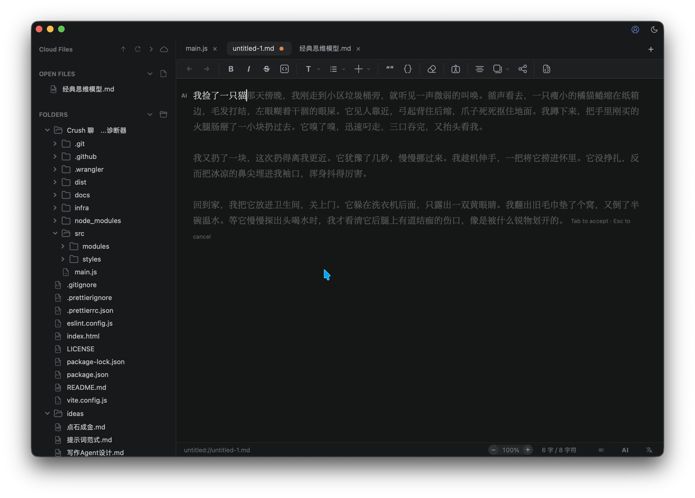
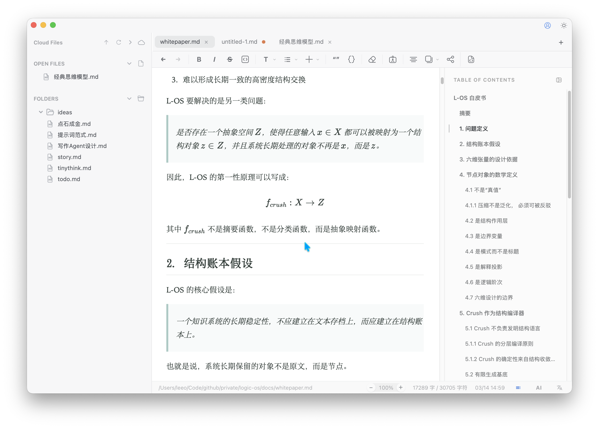
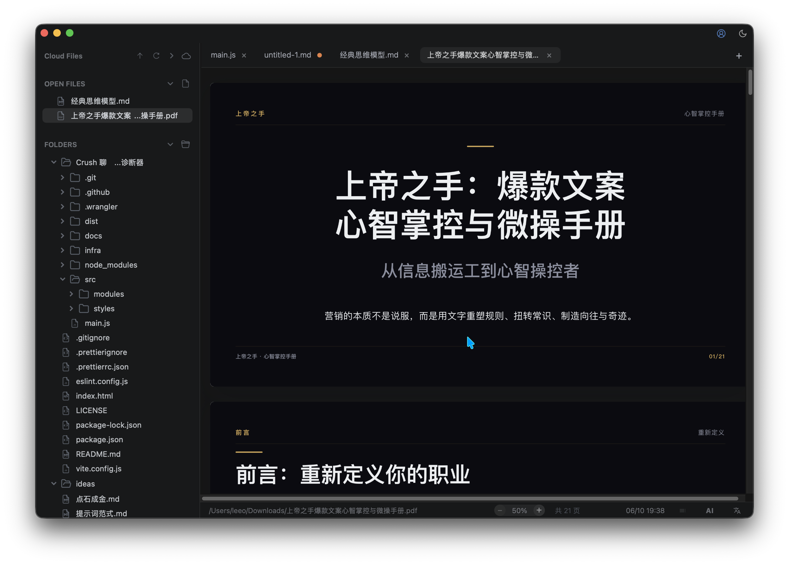
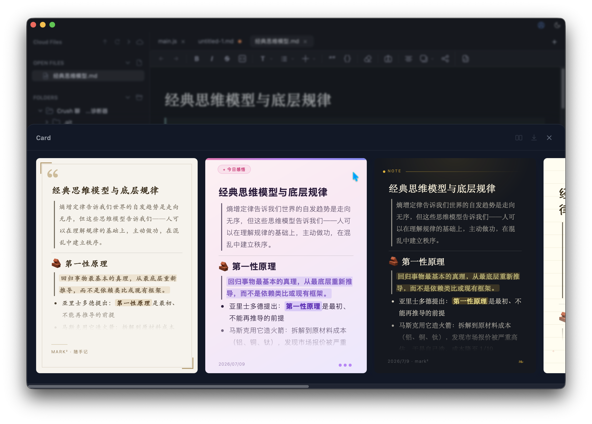

Mark2
小、快、简单、真正适合写作的 Markdown 桌面应用。把文件管理、编辑、阅读、AI 辅助和卡片导出放在同一个工作区。


安装包不到 30 MB。底下是 Rust + WebView，用起来轻快。
小、快、简单、真正适合写作的 Markdown 桌面应用。把文件管理、编辑、阅读、AI 辅助和卡片导出放在同一个工作区。
不做庞大的知识系统，只做一件小事——让你顺顺利地写东西。
在光标处续写、卡住时给灵感，对选中内容润色、扩写、精简，也能基于当前文档总结整理。
除了 Markdown，还支持 PDF、代码、图片、音视频、表格和 Word 导入，围绕真实文档场景。
内嵌 LaTeX 公式与 Mermaid 图表渲染，写技术内容、论文、笔记都顺手。
基于 Tauri，底层是 Rust，安装包不到 30 MB。不需要为写一篇文章打开一个沉重的工作台。
使用本地文件和 Markdown，适合离线写作、长期保留、Git 管理与跨工具迁移。
把笔记、观点、摘录或文章片段快速导出成卡片图，方便分享。
写作、阅读、AI 协作和卡片导出，都在一个轻量工作区里。






从 GitHub Releases 下载对应平台的安装包，或直接访问仓库了解更完整的说明。